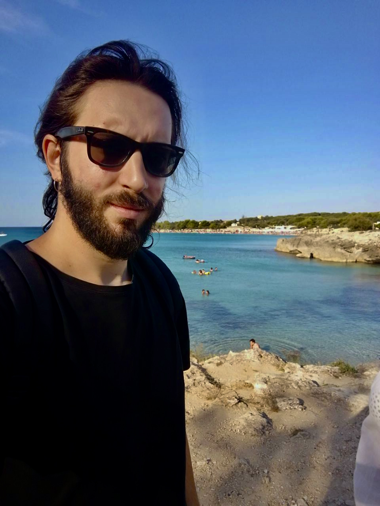

Welcome! I am a final-year PhD in Economics at the School of Economics and Business of the Norwegian University of Life Sciences. I am part of the research project "Developing value chains for CO2 storage and blue hydrogen in Europe". I use data and programming to investigate the market of CO2 storage. I am currently working on CO2 emissions and emission forecasting in Norway.
PAPERS.
List.
ECN280 Energy Economics
Norwegian University of Life Sciences
Teaching Assistant, Spring 2024
BUS311 Environmental Management and Sustainability Reporting
Norwegian University of Life Sciences
Teaching Assistant, Spring 2023
ECN280 Energy Economics
Norwegian University of Life Sciences
Teaching Assistant, Spring 2023
ECN372 Climate Economics
Norwegian University of Life Sciences
Teaching Assistant, Fall 2022